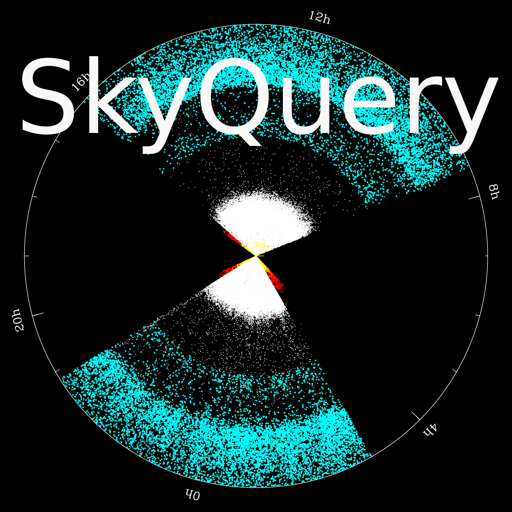
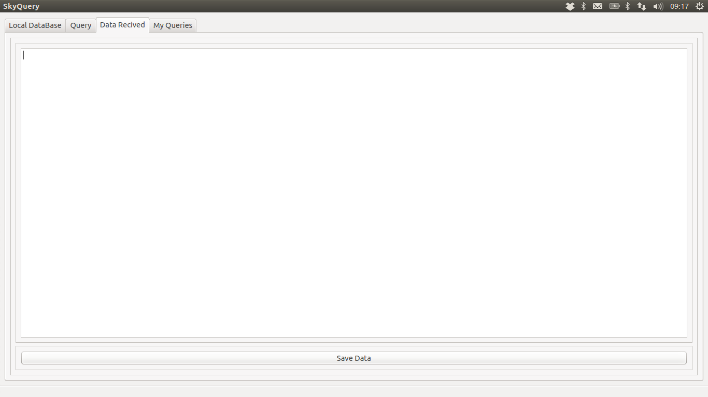
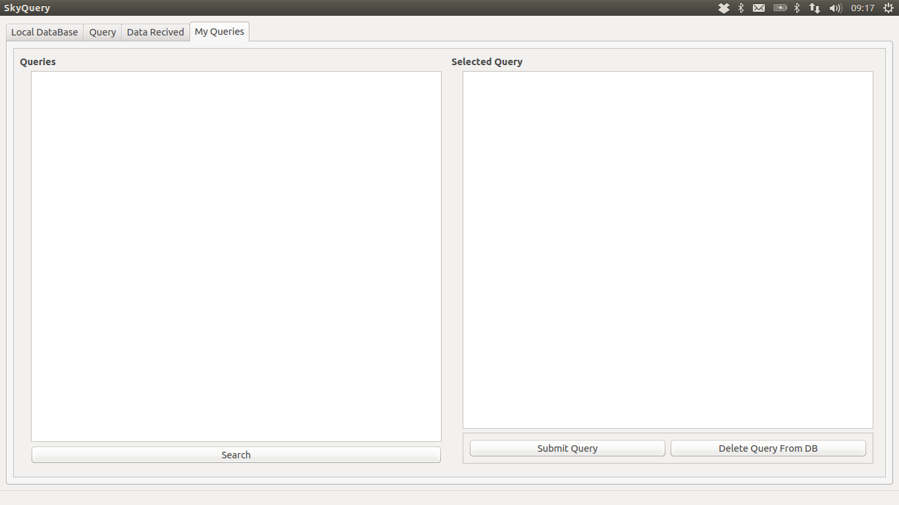
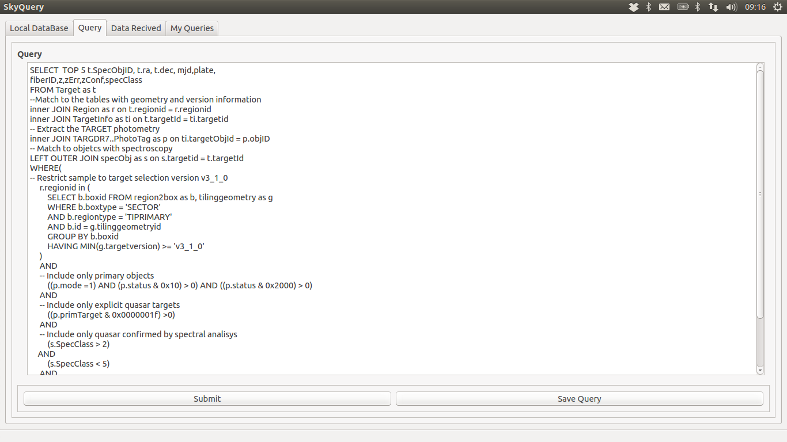

it under the terms of the GNU General Public License as published bySkyQuery is free software: you can
redistribute it and/or modify
the Free Software Foundation, either version 3 of the License.
SkyQuery is distributed in the hope that it will be useful,
but WITHOUT ANY WARRANTY; without even the implied warranty of
MERCHANTABILITY or FITNESS FOR A PARTICULAR PURPOSE. See the
GNU General Public License for more details.
You should have received a copy of the GNU General Public License
along with Foobar. If not, see <http://www.gnu.org/licenses/>.
Screenshot


